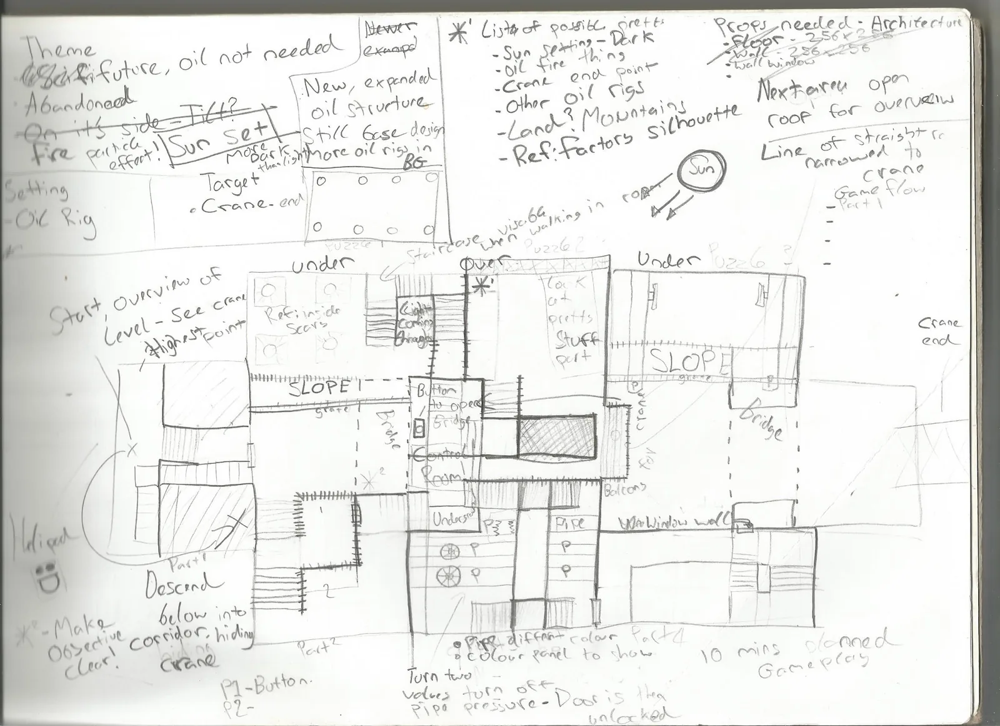
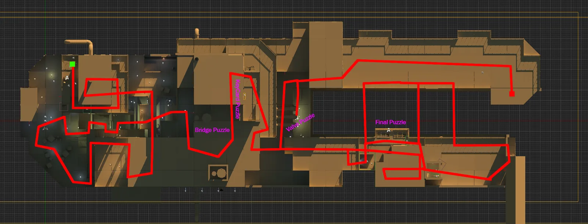
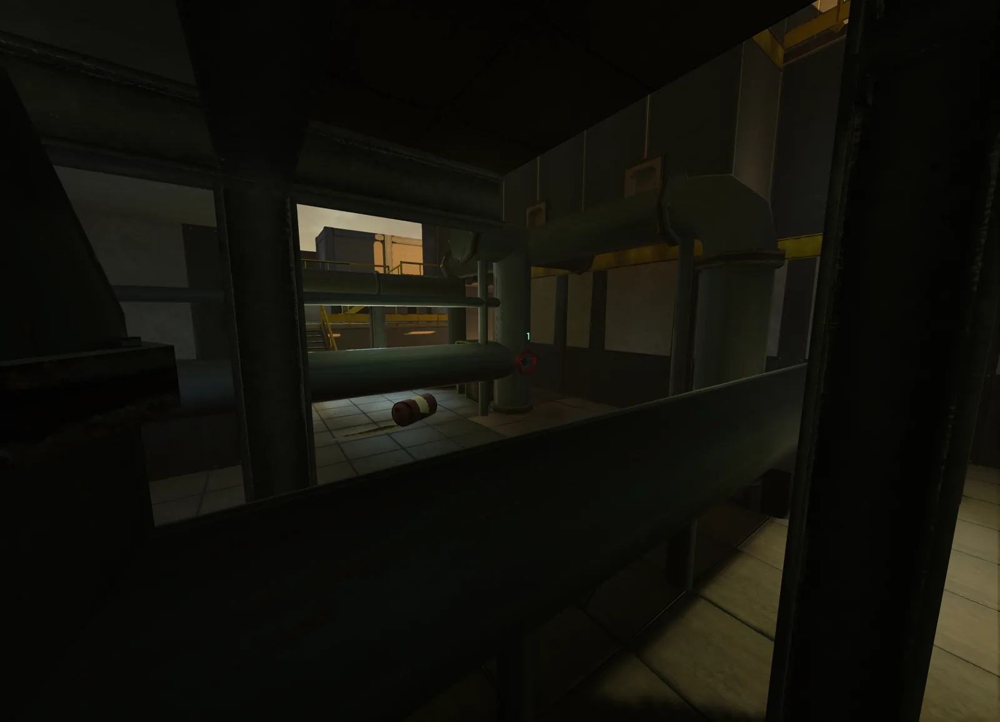
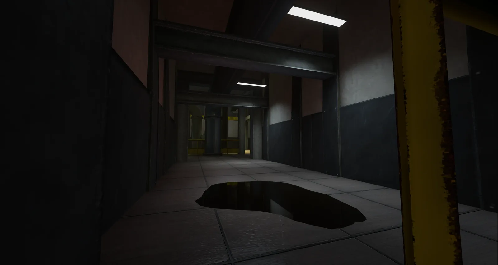
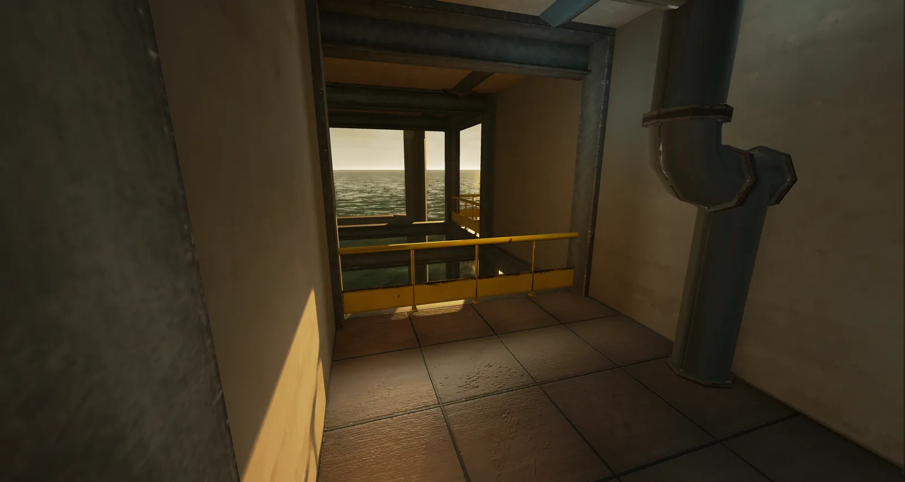

Oilious Rigious
- Year
- 2014
- Platform
- PC
- Engine
- Unreal Engine





A level set on an oil rig in the near future, containing puzzles, narrative and limited exploration.
My role
I designed the level over two months, making it enclosed and maze-like without losing the player's sense of direction.
What I did
- Taught mechanics one at a time, then combined them all in the final puzzle
- Used elevation, observation points, sight lines, composition layers and foreshadowing to guide the player
Mechanic teaching
The individual puzzles are all combined in the final puzzle.
Timed bridges are introduced. A simple button will activate the bridge. The player now knows their function and that they're timed.
A locked door requires a key card to pass; coloured doors require the same coloured card. The player knows they must search a relative area for the card.
A door is locked near a set of valves; the correct setting has to be applied to unlock the door.
The final puzzle introduces all these previous obstacles, combining previously obtained knowledge. The player wouldn't be able to reach this part of the level without completing and learning about the previous obstacles.
Elevation
Continually changing heights, giving a sense of scale to the environment.
Observation
Throughout the level are points of observation, where the player can see the whole map. This hints at the idea of a new objective, without directly telling the player.
Sight lines
Sight lines were designed to give emphasis to an object. I placed one to emphasise the importance of the crane. It is placed within a “frame”, making it the most important visible object.
Composition layers
Dividing the level, I created a foreground layer to frame the more important objectives. The centre of interest holds the crane. The background layer gives depth to the world, and backstory, i.e. that the player is on an oil rig.
Foreshadowing
Points of foreshadowing hint at the next location the player needs to reach, continually giving them an idea of the general direction they need to move in, and that they're traversing correctly.